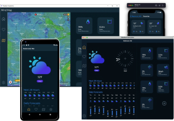

<div class="story">
    <div class="story__header">
        <progress-line
            :active-line="activeLine"
        />
        <avatar
            :title="titleStory"
            src="https://cdn.pixabay.com/photo/2021/01/24/19/05/crane-5946169_960_720.jpg"
            alt="image"
        />
    </div>
    <div class="story__desc">
        <div v-if="loadingSpinner" class="spinner">
            <icon name="spinner" />
        </div>
        <div class="story__content"  v-else-if="texts">
            
            <p v-for="(n, i) in texts" :key="n" class="story__text">
                <span class="bold" v-if="i === 0">{{boldText}}</span>
                {{n}}
            </p>
        </div>
        <placeholder v-else :amount="2"/>
    </div>
    <div class="story__footer">
        <x-button :defaultText="defaultText" :hoverText="hoverText" ></x-button>
    </div>
</div>
